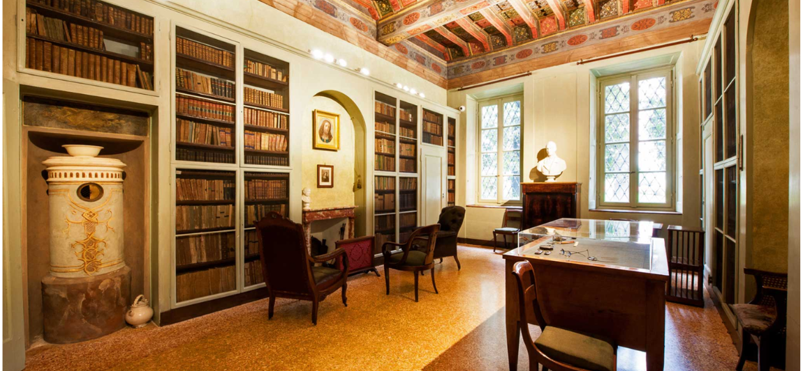

References
Bibliografia primaria
La bibliografia primaria è la bibliografia delle opere di Alessandro Manzoni:
- Tavola sinottica: Italia P., Gli sposi promessi. Tavola sinottica con I promessi sposi
- I promessi sposi: Sapegno N. and Viti G., Promessi Sposi, Le Monnier, file:///Users/alicep/Downloads/Sapegno-Viti_PromessiSposi_144%20(1).pdf
- LeggoManzoni: LeggoManzoni, progetto DHARC – Università di Bologna, https://projects.dharc.unibo.it/leggomanzoni/, (URL consultato in febbraio 2026)
Bibliografia secondaria
La bibliografia secondaria è la bibliografia delle opere su Alessandro Manzoni:
- Alessandro Manzoni Wikipedia: Alessandro Manzoni, Wikipedia, https://it.wikipedia.org/wiki/Alessandro_Manzoni, (URL consultato in febbraio 2026)
- Alessandromanzoni.org: Alessandro Manzoni Homepage, Manzoni Online,https://www.alessandromanzoni.org/, (URL consultato in febbraio 2026)
- Alessandromanzoni.org: I promessi sposi, Manzoni Online, https://www.alessandromanzoni.org/opere/1, (URL consultato in febbraio 2026)
- Annali Manzoniani. Dalla fabula alla parabola. Storia dei capitoli VII-VIII tra Seconda minuta e Ventisettana: Martinelli D.,Annali Manzoniani. Dalla fabula alla parabola. Storia dei capitoli VII-VIII tra Seconda minuta e Ventisettana, 2018, pp. 43–71, https://www.casadelmanzoni.it/sites/default/files/allegato/Annali%20Manzoniani%20n1%20-%20p43-71.pdf, (URL consultato in febbraio 2026)
- Atlante Manzoni: Lorenzo Sabatino, Atlante Promessi Sposi, https://lnz-sbt3.github.io/atlante-promessi-sposi/, (URL consultato in febbraio 2026)
- Casa del Manzoni: Il Centro Nazionale di Studi Manzoniani, Casa del Manzoni, https://www.casadelmanzoni.it/il-centro-nazionale-di-studi-manzoniani/, (URL consultato in febbraio 2026)
- Casa del Manzoni: La vita, Casa del Manzoni, https://www.casadelmanzoni.it/la-vita, (URL consultato in febbraio 2026)
- Casa del Manzoni: Le opere, Casa del Manzoni, https://www.casadelmanzoni.it/le-opere, (URL consultato in febbraio 2026)
- Dizionario biografico: Alessandro Manzoni - Dizionario biografico degli italiani (2007), Treccanio, https://www.treccani.it/enciclopedia/ricerca/alessandro-manzoni/Dizionario_Biografico/#google_vignette, (URL consultato in febbraio 2026)
- HTML Introduction W3schools: HTML Introduction, w3schools ,https://www.w3schools.com/html/html_intro.asp, (URL consultato in febbraio 2026)
- I promessi sposi Wikipedia: I promessi sposi, Wikipedia, https://it.wikipedia.org/wiki/I_promessi_sposi, (URL consultato in febbraio 2026)
- LeggoManzoni (Leggo): LeggoManzoni, DH.ARC - Digital Humanities Advanced Research Centre - Projects, https://projects.dharc.unibo.it/leggomanzoni/confronta, (URL consultato in febbraio 2026)
- LeggoManzoni (Vedo): LeggoManzoni, DH.ARC - Digital Humanities Advanced Research Centre - Projects, https://projects.dharc.unibo.it/leggomanzoni/vedo, (URL consultato in febbraio 2026)
- Philoeditor: Philoeditor, DH.ARC - Digital Humanities Advanced Research Centre - Projects, https://projects.dharc.unibo.it/philoeditor/#, (URL consultato in febbraio 2026)
- Treccani: Alessandro Manzoni, Enciclopdia on line, https://www.treccani.it/enciclopedia/alessandro-manzoni/, (URL consultato in febbraio 2026)
Sitografia
Tools
Questa sezione presenta i software e le piattaforme digitali utilizzati come strumenti di supporto, ispirazione e lavoro consultati per la realizzazione del progetto.
Dai un'occhiata a Githu
-
Ti è piaciuto questo progetto?
Vuoi vedere come è stato costruito questo sito passo dopo passo?
Esplora il repository del prgetto per approfondire.
Dai un’occhiata veloce al mio profilo GitHub per scoprire altri progetti che ho realizzato.
Mandami
un'e-mail
un'e-mail
-
Sei interessato al progetto?
Vuoi far parte di qualcosa di entusiasmante e aiutare a far crescere questo progetto?
Connettiti con me! Mandami una e-mail qui: alicep2401@gmail.com
Contattami su LinkedIn
-
Vuoi metterti in contatto con me?
Contattami su LinkedIn!
Seguimi su Instagram
-
Dai un’occhiata al mio Instagram per conoscermi meglio!
Alma Mater Studiorum
-
Scopri tutto ciò che Alma Mater Studiorum – Univeristy of Bologna ha da offrire
Attualmente sto frequentando il secondo anno del Corso di Laurea Magistrale / Master biennale in Digital Humanities e Conoscenza Digitale.

Sautech
Group
Group
-
Sautech Group - System Integrator per l'innovazione tecnologica è un noto system integrator che fornisce servizi e applicazioni tecnologicamente avanzati.
Questo progetto è stato sviluppato sotto la guida e la supervisione esperta dei professionisti di Sautech.